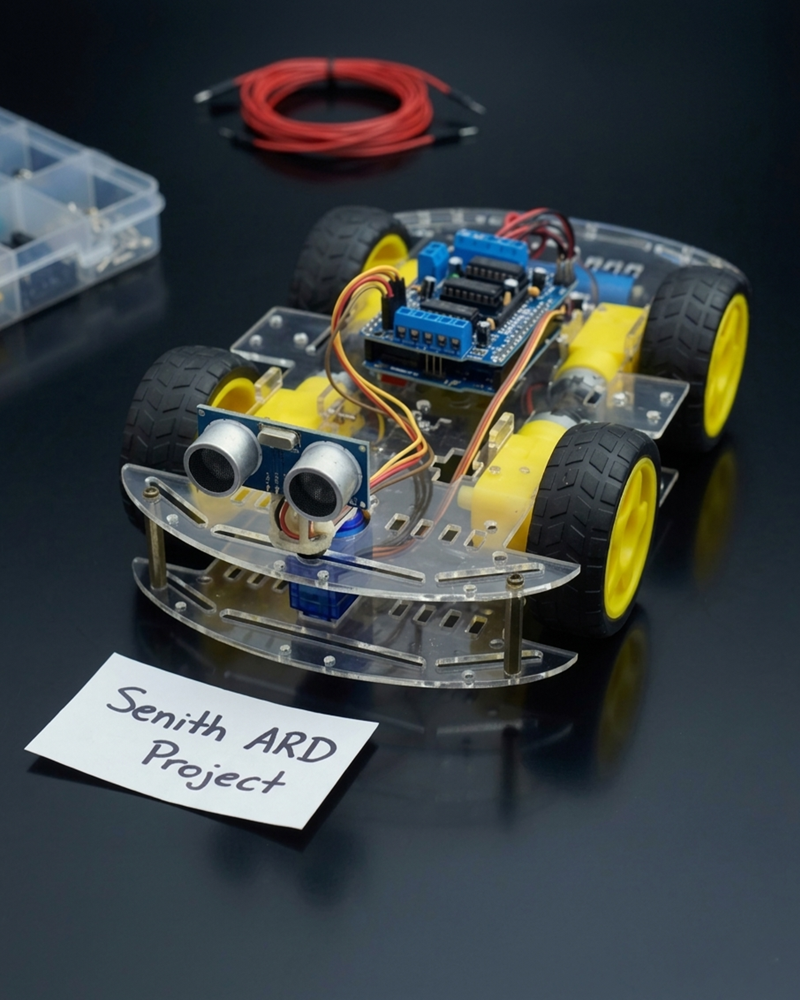

Finger Counter Using Python & OpenCV
A computer vision application made to detect and count the number of fingers using a webcam input in real time. Uses OpenCV for image processing and a Custom Hand Tracking Module for detecting hand landmarks. The fingers counted by the application are displayed as an overlay image on top of the video feed in real-time using the frame rate at which it is running to show how quickly the hand is being detected.
View Project
Arduino Obstacle Avoiding Robot
An Arduino-based robot designed to navigate autonomously while avoiding obstacles. Equipped with ultrasonic sensors for distance measurement and a microcontroller for processing sensor data and controlling motor drivers.